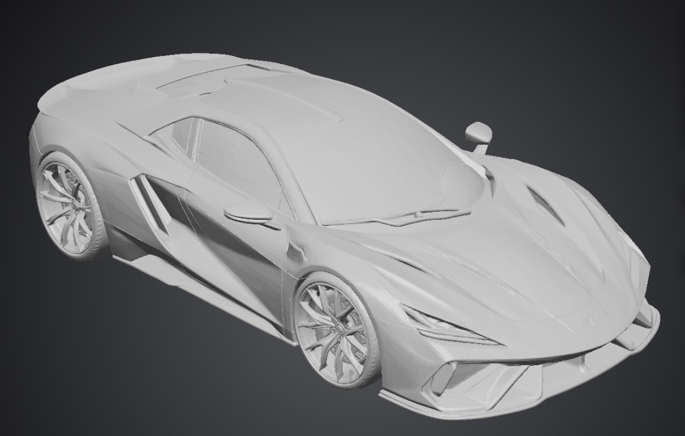

VYREN
VYRENAURORAR26
Our first chapter. A digital performance-car concept being developed toward a physical prototype.
Discover the R26 →AURORA R26
A low, focused sports-car concept built around proportion, presence and the experience of driving. The R26 currently exists as an early digital prototype.
Designed to become real.
No invented performance numbers. No finished-car claims. This is the development story from concept to prototype.
FROM DIGITAL
TO PHYSICAL.
Identity, exterior direction and first digital vehicle.
Form refinement, views and presentation assets.
Physical model for proportion and presentation.
Future low-speed demonstrator and development platform.

“Build the idea carefully. Show the process. Make the first prototype count.”
VYREN is at the beginning. The goal is to turn a digital automotive concept into something physical, credible and worth developing further.
Our story →